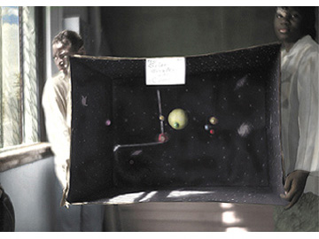

Solar System-Chicago, Howard Seth Miller,
archival inkjet pigment print ©1997
Phyllis Stigliano Art Projects
62 Eighth Avenue
Park Slope/Brooklyn 11217
516.359.3332
Approximately 3 blocks from Grand Army Plaza subway stop on the 2 & 3 train or 7th Avenue stop on the Q train; walking distance from the Brooklyn Museum.
HOURS: by appointment